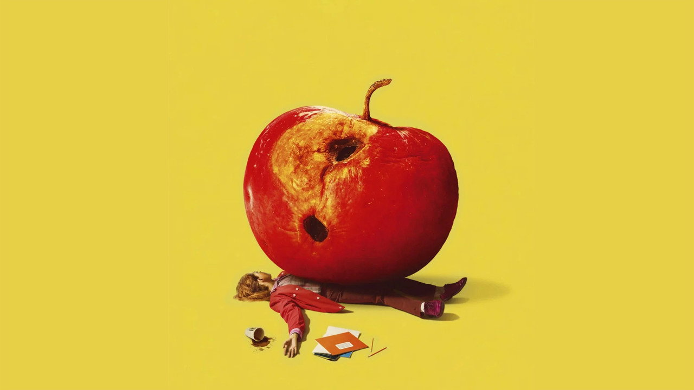
Bad Apples
Une enseignante enferme par inadvertance son élève le plus indiscipliné chez elle. Tentant d'arranger les choses, elle hésite lorsque sa classe commence à s'épanouir en l'absence de l'enfant, lui posant un dilemme impossible.
By Any Means
Un jeune agent noir du FBI est envoyé au Mississippi dans les années 60 afin d’enquêter sur une vague de meurtres brutaux visant des leaders du mouvement des droits civiques. Contraint de faire équipe avec le célèbre tueur à gages de la mafia Greg Scarpa, il se retrouve entraîné dans une traque meurtrière où la frontière entre justice et vengeance devient de plus en plus floue.
Tenzing : à la conquête de l’Everest
Un homme déterminé se lance dans une aventure périlleuse - et brave des obstacles apparemment insurmontables - pour réaliser son rêve d'être le premier à atteindre le sommet de l'Everest.
Hope
Alors que les secours sont mobilisés ailleurs et que toute communication est interrompue, les habitants de Hope doivent faire face seuls à une menace grandissante. Tandis que certains tentent de protéger le village, d’autres s’aventurent dans la montagne… mais deviennent à leur tour des proies. L’ignorance et la peur déclenchent une spirale incontrôlable aux conséquences dévastatrices.
Clayface
L'ascension fulgurante de Matt Hagen, de gamin des rues de Gotham à star hollywoodienne, est brutalement interrompue lorsqu'un baron du crime le laisse atrocement défiguré. Abandonné de tous et n'ayant plus rien à perdre, Matt se tourne vers un traitement expérimental qui lui rend miraculeusement son apparence... mais altère profondément sa perception de la réalité. Il sombre alors dans une spirale destructrice, consumé par un irrépressible désir de vengeance.
Masterplan
Quand un voleur légendaire jette son dévolu sur La Joconde, il recrute deux jeunes inconnus pour l'aider (Chiara, une experte italienne du cybercrime et Jay, un spécialiste français des explosifs) avant de leur révéler qu'il est leur père. Au milieu de retrouvailles chaotiques, cette nouvelle famille devra apprendre à collaborer et éviter de s'entretuer si elle veut réussir le casse du siècle.
Action
ExplorerAnimation
ExplorerComédie
Explorer
Crime
Explorer
Horreur
Explorer
Drame
ExplorerFantastique
Explorer
Science-Fiction
Explorer
Trouvez le contenu qui vous correspond
Utilisez la recherche avancée ›
Découvrez les tendances
Parcourez les films et séries du moment ›
Action
Découvrir le genre
Horreur
Découvrir le genre
Animation
Découvrir le genre
Comédie
Découvrir le genre
Top 10 des films aujourd'hui
Top 10 des séries aujourd'hui
Animés populaires
Films à découvrir
Voir plusUne enseignante enferme par inadvertance son élève le plus indiscipliné chez elle. Tentant d'arranger les choses, elle hésite lorsque sa classe commence à s'épanouir en l'absence de l'enfant, lui posant un dilemme impossible.
Bad Apples
Un jeune agent noir du FBI est envoyé au Mississippi dans les années 60 afin d’enquêter sur une vague de meurtres brutaux visant des leaders du mouvement des droits civiques. Contraint de faire équipe avec le célèbre tueur à gages de la mafia Greg Scarpa, il se retrouve entraîné dans une traque meurtrière où la frontière entre justice et vengeance devient de plus en plus floue.
By Any Means
Un homme déterminé se lance dans une aventure périlleuse - et brave des obstacles apparemment insurmontables - pour réaliser son rêve d'être le premier à atteindre le sommet de l'Everest.
Tenzing : à la conquête de l’Everest
Alors que les secours sont mobilisés ailleurs et que toute communication est interrompue, les habitants de Hope doivent faire face seuls à une menace grandissante. Tandis que certains tentent de protéger le village, d’autres s’aventurent dans la montagne… mais deviennent à leur tour des proies. L’ignorance et la peur déclenchent une spirale incontrôlable aux conséquences dévastatrices.
Hope
L'ascension fulgurante de Matt Hagen, de gamin des rues de Gotham à star hollywoodienne, est brutalement interrompue lorsqu'un baron du crime le laisse atrocement défiguré. Abandonné de tous et n'ayant plus rien à perdre, Matt se tourne vers un traitement expérimental qui lui rend miraculeusement son apparence... mais altère profondément sa perception de la réalité. Il sombre alors dans une spirale destructrice, consumé par un irrépressible désir de vengeance.
Clayface
Quand un voleur légendaire jette son dévolu sur La Joconde, il recrute deux jeunes inconnus pour l'aider (Chiara, une experte italienne du cybercrime et Jay, un spécialiste français des explosifs) avant de leur révéler qu'il est leur père. Au milieu de retrouvailles chaotiques, cette nouvelle famille devra apprendre à collaborer et éviter de s'entretuer si elle veut réussir le casse du siècle.
Masterplan
En 1993, Ryu et Ken Masters, deux Street Fighters autrefois inséparables, sont replongés dans l’arène lorsque la mystérieuse Chun-Li les recrute pour le prochain World Warrior Tournament : un affrontement brutal où se mêlent poings, destin et fureur. Mais derrière cette battle royale se cache une conspiration mortelle qui les oblige à s’affronter, tout en faisant face aux démons de leur passé… Et s’ils échouent, c’est GAME OVER.
Street Fighter
Quatre ans se sont écoulés, Peter, désormais adulte, vit seul, s'est volontairement effacé de la vie et des souvenirs de ses proches. Luttant contre le crime dans un New York qui ne le reconnaît plus, il se consacre entièrement à la protection de la ville - un Spider-Man à plein temps - mais à mesure que les responsabilités s'intensifient, la pression provoque une transformation physique surprenante qui menace son existence, tandis qu'une étrange nouvelle vague de crimes donne naissance à l'une des menaces les plus redoutables qu'il ait jamais affrontées.
Spider-Man : Brand New Day
Des enfants piégés dans une émission de télévision en apparence joyeuse doivent trouver un moyen d'échapper à l'emprise sinistre de Buddy, la peluche adorée mais malveillante qui anime l'émission.
Buddy
Découvrez ce titre sur CinéZone.
You Can See Everything
Séries populaires
Voir plusHung Sue Gan partant du bas, a créé sa propre entreprise de logistique, qui fonctionne maintenant bien. Sa seule préoccupation maintenant, ce sont ses trois filles. Sa fille aînée a immigré à l'étranger. Sa deuxième fille, Hung Yeuk Shui, a atteint l'âge du mariage, mais n'a aucun espoir de se marier de si tôt. Hung Sue Yan, le frère de Hung Sue Gan, emménage avec la famille, mettant temporairement fin à sa vie de photographe nomade. Il rejoint l'entreprise de Hung Yeuk Shui et rencontre Ko Pak Fei, le directeur d'une boutique en ligne. Depuis que Hung Sue Yan a emménagé, une série d'événements étranges se sont produits dans la famille. Après enquête, la source est retrouvée jusqu'à Lung Ging Fung, un jeune homme prometteur qui est le fils du magnat des grands magasins Lung Gam Wai.
Come Home Love: Lo and Behold
Andy Cohen, directeur du réseau Bravo, discute de sujets liés à la culture pop avec des célébrités et des personnalités de téléréalité.
Watch What Happens Live with Andy Cohen
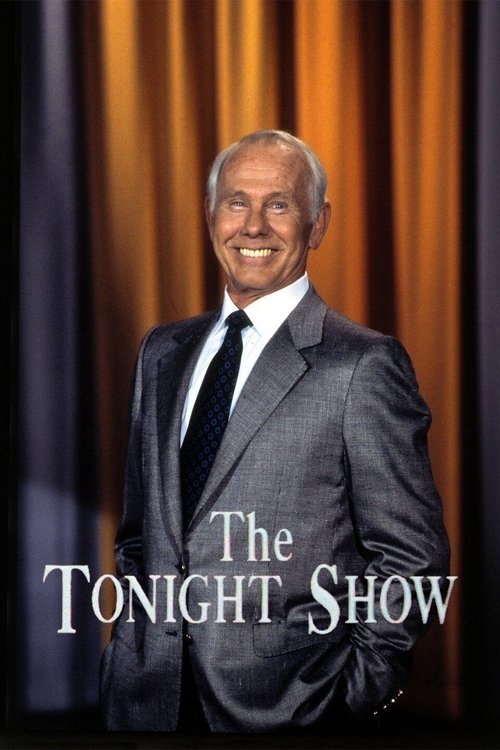
Le 1er octobre 1962, Groucho Marx accueillit Johnny Carson comme le nouveau présentateur du The Tonight Show. L’émission a été filmée à New York pendant pratiquement les dix premières années, avec Johnny Carson en tant que présentateur. Puis à partir de mai 1972, le plateau déménagea au Studio One à Burbank en Californie pour le reste de son « mandat » .
The Tonight Show avec Johnny Carson
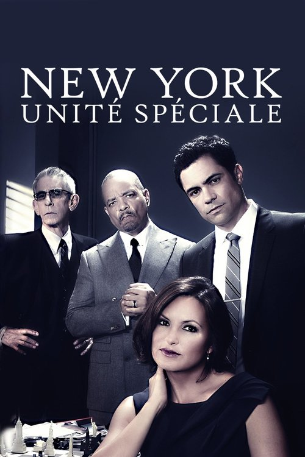
Les inspecteurs qui font partie de la division des Crimes sexuels (SVU) du service de police de la ville de New York (NYPD) enquêtent sur des crimes de nature sexuelle. Alors que les autres émissions de la franchise de "La loi et l'ordre" se sont largement concentrées sur les cas de meurtres, les inspecteurs de la division des Crimes sexuels (SVU) ont souvent affaire à des crimes, tel le viol, auquel la victime survit et elle aide les autorités lors de l'enquête.
New York Unité Spéciale
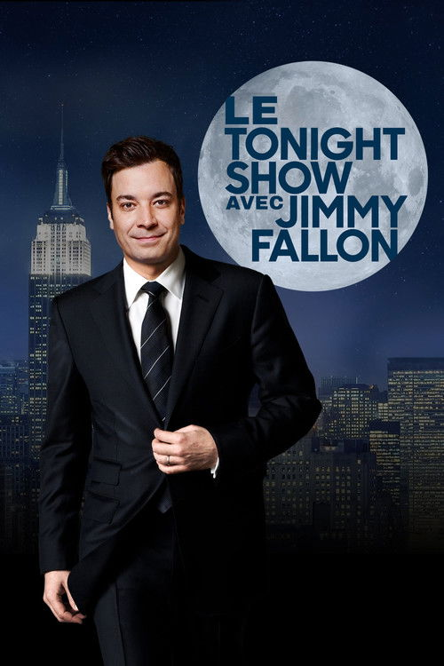
Mêlant humour et talk-show, Jimmy Fallon reçoit des personnalités de la musique, du cinéma, ou encore du sport, pour un entretien.
Le Tonight Show
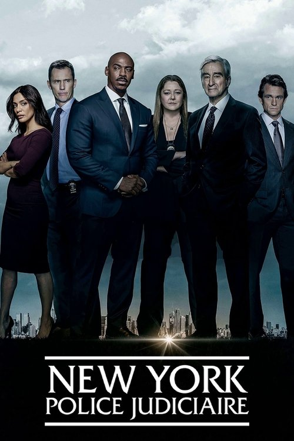
À New York, détectives et assistants du procureur tentent de résoudre les affaires les plus délicates. Les uns sur le terrain, les autres devant les tribunaux.
New York Police Judiciaire
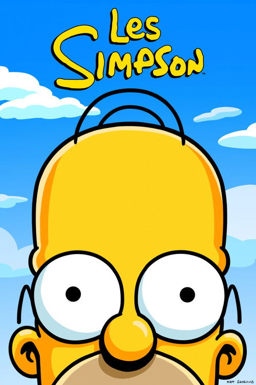
Située à Springfield, ville américaine moyenne, la série se concentre sur les singeries et les aventures quotidiennes de la famille Simpson : Homer, Marge, Bart, Lisa et Maggie, ainsi que des milliers d'autres personnages.
Les Simpson
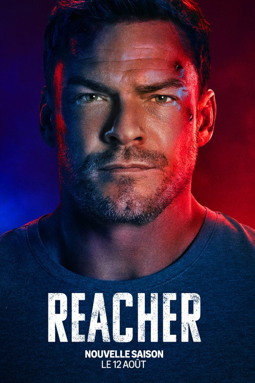
Ancien officier de Police Militaire, Jack Reacher est arrêté pour un meurtre qu'il n'a pas commis et découvre une conspiration sanglante où baignent flics véreux, hommes d'affaire louches et politiciens corrompus. Avec son astuce pour seule arme, il va déjouer ce qui se trame à Margrave en Géorgie.
Reacher
Découvrez ce titre sur CinéZone.
Late Night with Seth Meyers
Les présentateurs de l'émission sont au nombre de 7, ils affrontent seul ou ensemble les invités afin de gagner la « course finale » et de gagner des « Running Ball ». Ces dernières sont utiles pour éviter tout genre de punitions qui varient selon les épisodes. Les présentateurs sont la plupart du temps mélangés avec les invités pour rendre les défis plus équitables étant donné que les présentateurs connaissent déjà à l'avance certains jeux contrairement aux invités.
Running Man
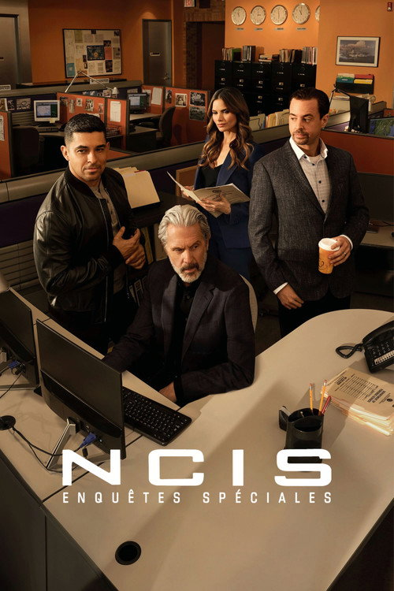
L'agent spécial Leroy Jethro Gibbs, de la Section criminelle de la Gendarmerie maritime, dirige un groupe de personnes aux personnalités colorées qui enquête sur les crimes. Ceux-ci vont du meurtre et de l'espionnage au terrorisme, et sont reliés de manière assurée au personnel du corps de la Marine. L'équipe est composée d'Anthony DiNozzo, un ex-inspecteur plein d'esprit spécialisé en homicides, d'Abby Sciuto, l'excentrique spécialiste d'enquête en technique de laboratoire, de Timothy McGee, brillant lorsqu'inquiet, et de Ziva David, ex-officier de liaison du Mossad. Le Dr Donald "Ducky" Mallard contribue à la résolution de cas grâce à sa grande expérience dans le domaine de la médecine légale.
NCIS : Enquêtes Spéciales
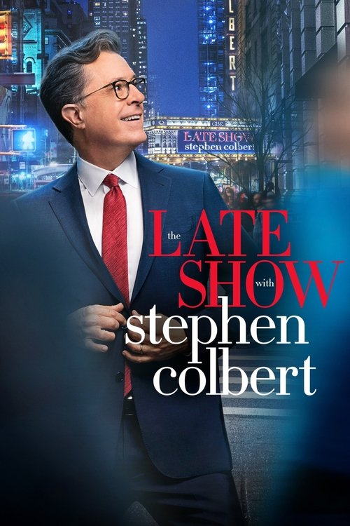
L'acteur d'improvisation et comique Stephen Colbert laisse derrière lui son personnage "The Colbert Report" alors qu'il fait son retour tant attendu à la télévision. En tant qu'hôte de la franchise The Late Show redux - enregistrée au théâtre historique Ed Sullivan à New York - Colbert parle pour la première fois aux acteurs, aux athlètes, aux politiciens, aux bandes dessinées, aux artistes et aux musiciens. Les fans fidèles, cependant, seront également traités avec cohérence car Colbert reste soutenu par de nombreux membres de son équipe d'écriture et numérique de son ancienne entreprise. Jon Batiste, formé à Julliard, est le chef d'orchestre.
The Late Show with Stephen Colbert
Meredith Grey, fille d'un chirurgien très réputé, commence son internat de première année en médecine chirurgicale dans un hôpital de Seattle. La jeune femme s'efforce de maintenir de bonnes relations avec ses camarades internes, mais dans ce métier difficile la compétition fait rage.
Grey's Anatomy
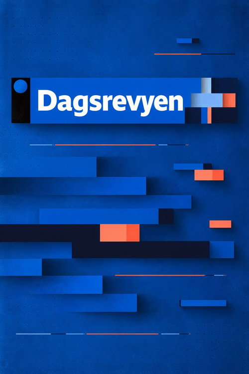
Découvrez ce titre sur CinéZone.
Dagsrevyen
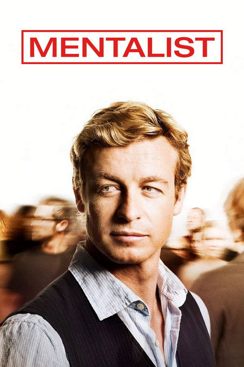
Un mentaliste utilise ses extraordinaires dons d'observation pour résoudre des crimes en tant que consultant du CBI. Une façon pour lui de contribuer à la justice et de démasquer le mystérieux tueur en série qui a assassiné son épouse et sa fille…
Mentalist
Découvrez ce titre sur CinéZone.
alpha Österreich
Les aventures du chat bleu.
Doraemon
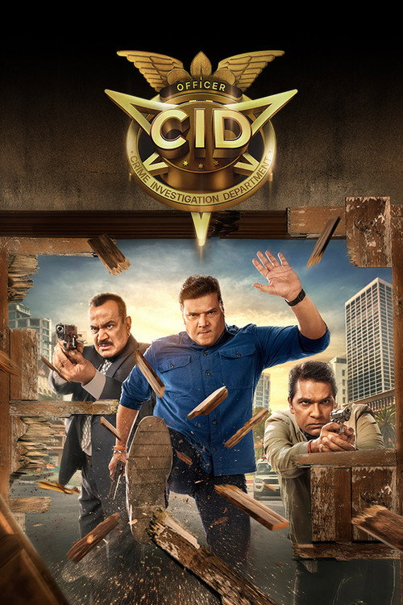
Une équipe d'hommes et de femmes dévoués du département des enquêtes criminelles est prête à tout pour résoudre les affaires les plus sanglantes et complexes de Mumbai.
C.I.D.
Trevor Noah et l'équipe de la plus fausse information au monde abordent les plus grandes histoires de l'actualité, de la politique et de la culture pop.
Le Daily Show
Après la mort soudaine et prématurée de son père, Carrie est propulsée dans l'univers impitoyable d'un lycée public et doit faire face à un scandale de harcèlement viral qui secoue sa communauté, à la pression incessante et à la cruauté des réseaux sociaux tandis qu'en parallèle, un mystérieux pouvoir de télékinésie s'éveille en elle.
Carrie
Films populaires
Voir plusQuatre ans se sont écoulés, Peter, désormais adulte, vit seul, s'est volontairement effacé de la vie et des souvenirs de ses proches. Luttant contre le crime dans un New York qui ne le reconnaît plus, il se consacre entièrement à la protection de la ville - un Spider-Man à plein temps - mais à mesure que les responsabilités s'intensifient, la pression provoque une transformation physique surprenante qui menace son existence, tandis qu'une étrange nouvelle vague de crimes donne naissance à l'une des menaces les plus redoutables qu'il ait jamais affrontées.
Spider-Man : Brand New Day
Alors que les secours sont mobilisés ailleurs et que toute communication est interrompue, les habitants de Hope doivent faire face seuls à une menace grandissante. Tandis que certains tentent de protéger le village, d’autres s’aventurent dans la montagne… mais deviennent à leur tour des proies. L’ignorance et la peur déclenchent une spirale incontrôlable aux conséquences dévastatrices.
Hope
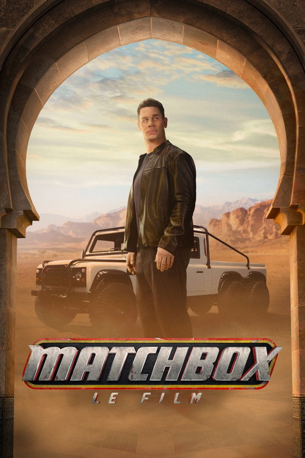
Des amis d'enfance reprennent contact et les retrouvailles prennent une tournure inattendue quand ils découvrent un dangereux complot international et doivent sauver le monde.
Matchbox – Le film
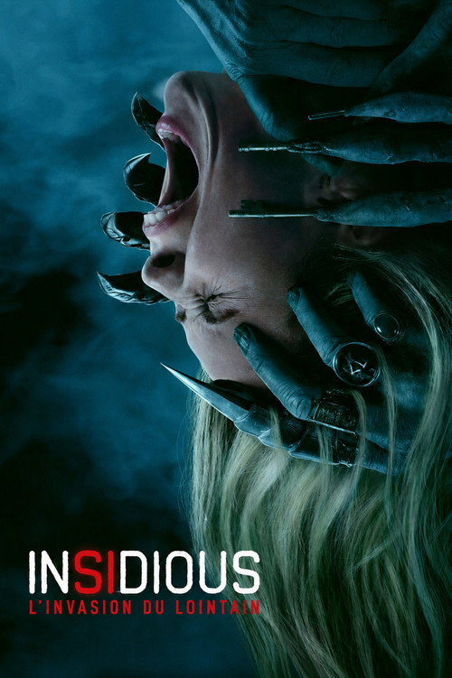
Gemma, une jeune mère élève sa fille dans la maison de son enfance. Elle découvre qu'elle peut voyager dans le Lointain, ce royaume purgatoire des âmes perdues au cœur de l'univers d'Insidious. Lorsqu'une entité malveillante s'en prend à elle, Gemma révèle un pouvoir qui change tout : elle ne se contente pas d'entrer dans le Lointain, elle peut ramener dans le monde réel ce qui s'y trouve. Une fois que les démons prennent conscience de son pouvoir, notre monde devient alors leur terrain de jeu.
Insidious : L'Invasion du Lointain
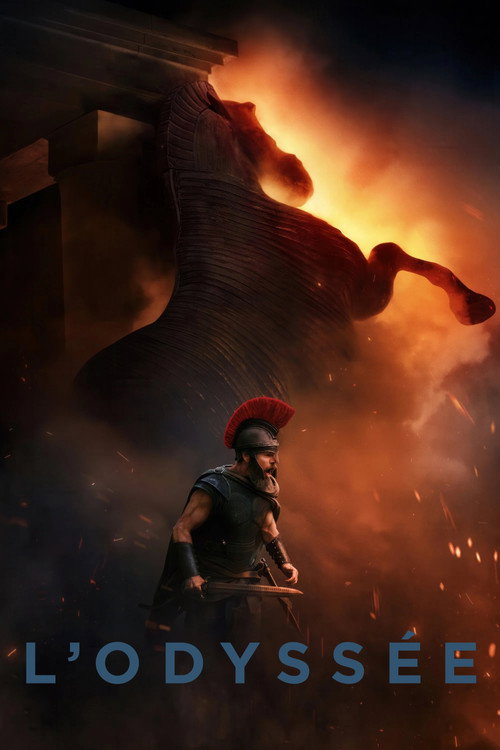
Vingt ans après son départ pour la guerre de Troie, le roi Ulysse rentre enfin à Ithaque, mais son voyage est parsemé d'aventures et d'épreuves.
L'Odyssée
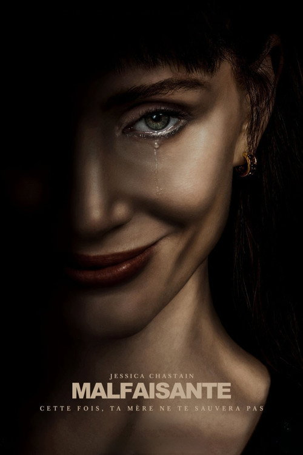
Une famille est la cible d'une entité qu'elle appelle « l'autre maman ».
Malfaisante
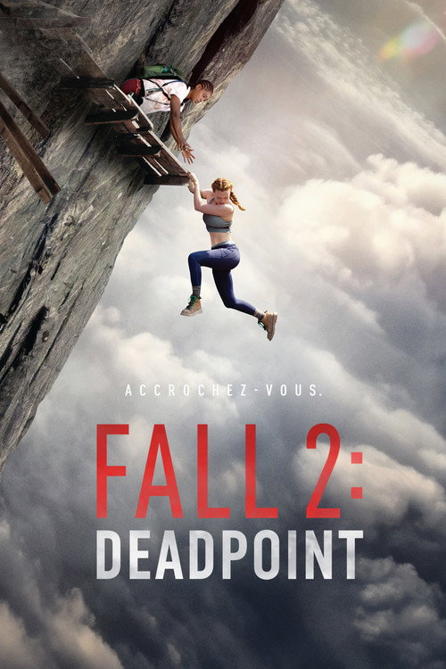
Dévastée par la mort de sa sœur Hunter, Jax se lie d’amitié avec Luce, l’intrépide amie de Hunter. Dans l’espoir de guérir, elles entreprennent la célèbre traversée sur planches du mont Kwan, en Thaïlande. Après un éboulement soudain, elles se retrouvent piégées sur une passerelle fragile à 900 mètres au-dessus du vide. Jax devra alors affronter ses peurs les plus profondes, se battre pour survivre et espérer tourner la page.
Fall 2 : Deadpoint
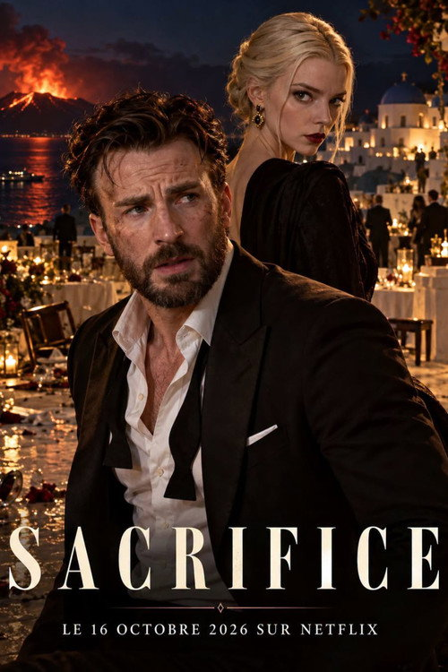
Un gala de charité est interrompu par l'attaque d'un violent groupe de radicaux lancés dans une mystérieuse quête pour accomplir une prophétie.
Sacrifice
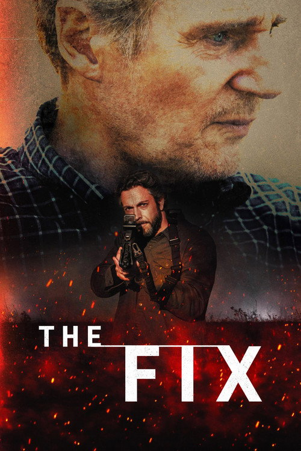
Après une mission désastreuse en Afghanistan, des agents de la CIA affectés par les combats tentent de se racheter en menant une opération de sauvetage risquée au cœur de Téhéran.
The Fix
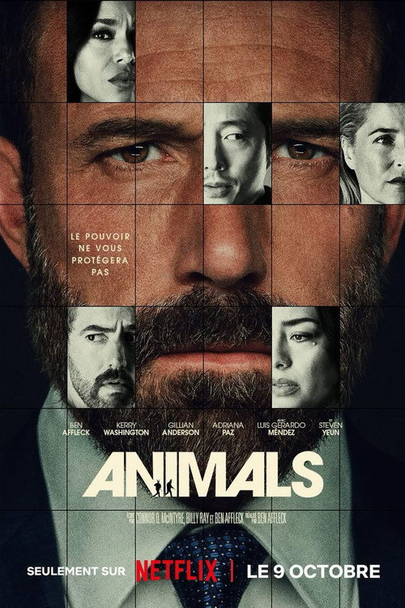
Quand leur fils est enlevé, un candidat à la mairie de Los Angeles et sa femme s'efforcent de réunir l'argent de la rançon et font des choix qui pourraient bouleverser leur vie.
Animals
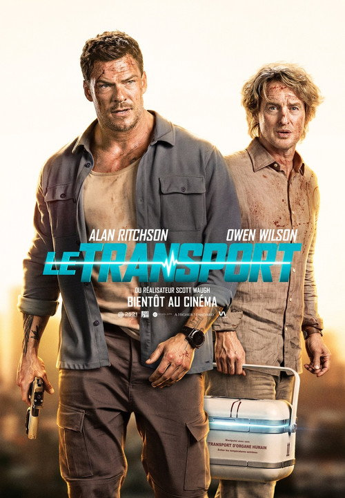
Un ancien soldat se retrouve engagé dans une course contre la montre lorsqu’une livraison médicale essentielle fait de lui et de son partenaire improbable la cible d’un cartel impitoyable. La mission se transforme rapidement en une chasse à l’homme meurtrière, où chaque détour, chaque retard et chaque balle les rapprochent de l’échec. Traqués de toutes parts, ils doivent survivre à cette poursuite et livrer leur cargaison à temps pour sauver la vie d’une petite fille.
Runner
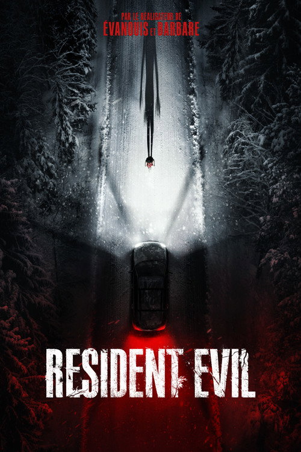
Bryan, un coursier médical, est en train d'effectuer une livraison lorsqu'une épidémie soudaine se déclare, le forçant à lutter pour sa survie.
Resident Evil
En 1993, Ryu et Ken Masters, deux Street Fighters autrefois inséparables, sont replongés dans l’arène lorsque la mystérieuse Chun-Li les recrute pour le prochain World Warrior Tournament : un affrontement brutal où se mêlent poings, destin et fureur. Mais derrière cette battle royale se cache une conspiration mortelle qui les oblige à s’affronter, tout en faisant face aux démons de leur passé… Et s’ils échouent, c’est GAME OVER.
Street Fighter
Quand un voleur légendaire jette son dévolu sur La Joconde, il recrute deux jeunes inconnus pour l'aider (Chiara, une experte italienne du cybercrime et Jay, un spécialiste français des explosifs) avant de leur révéler qu'il est leur père. Au milieu de retrouvailles chaotiques, cette nouvelle famille devra apprendre à collaborer et éviter de s'entretuer si elle veut réussir le casse du siècle.
Masterplan
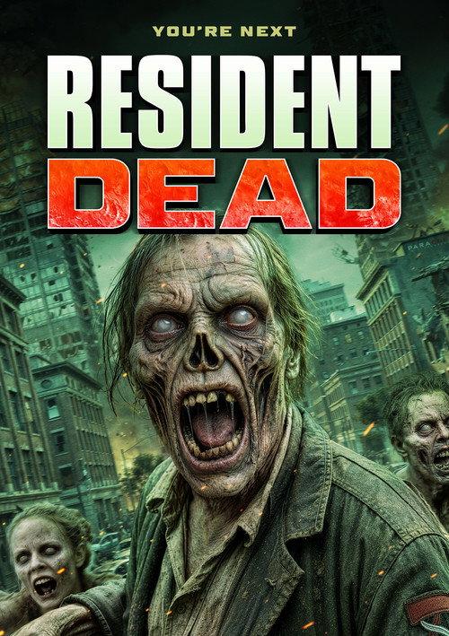
Découvrez ce titre sur CinéZone.
Resident Dead
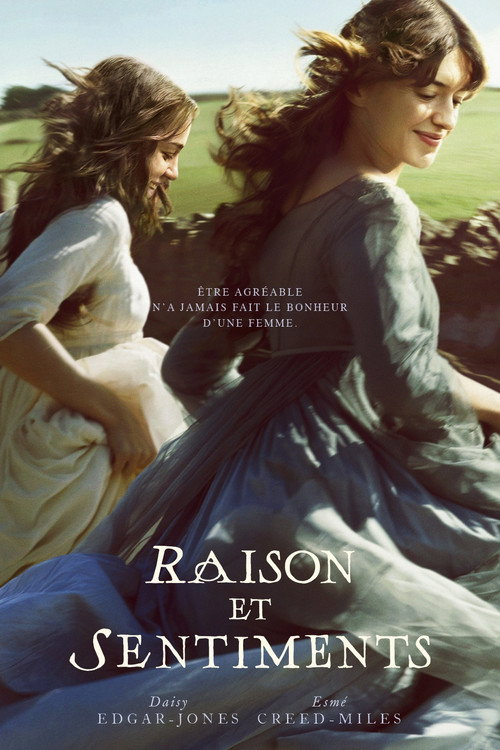
Une irrésistible nouvelle version du roman culte de Jane Austin, Raison et Sentiments, qui suit deux sœurs à travers leurs amours, leurs chagrins et le lien qui les unit d'une façon magistrale et profondément proche de nous.
Raison et Sentiments
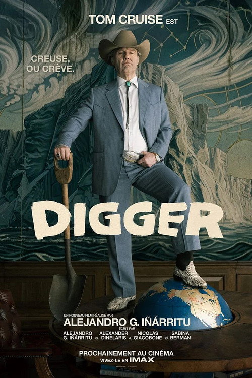
L’homme le plus puissant du monde se lance dans une mission frénétique pour prouver qu’il est le sauveur de l’humanité avant que le désastre qu’il a déclenché ne détruise tout.
Digger
Une famille de sorcières multigénérationnelle, maudite à être sans amour pendant des siècles, tente de briser le sort en affrontant de sombres secrets et en se sacrifiant les uns pour les autres.
Les Ensorceleuses 2
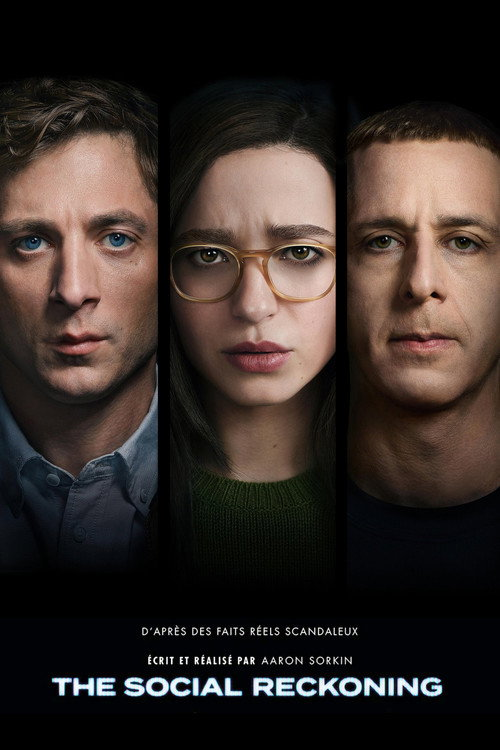
L'histoire s'inspire de "The Facebook Files" du Wall Street Journal, une série d'articles publiés en octobre 2021 par Jeff Horowitz, qui ont révélé les rouages internes ainsi que les nombreux dommages causés par le plus grand réseau social au monde.
The Social Reckoning
Des enfants piégés dans une émission de télévision en apparence joyeuse doivent trouver un moyen d'échapper à l'emprise sinistre de Buddy, la peluche adorée mais malveillante qui anime l'émission.
Buddy
CinéZone : films, séries et animés en streaming VF
Découvrez CinéZone sur senpai.watch
CinéZone réunit des films, des séries et des animés dans un catalogue en français. Sur senpai.watch, découvrez l’histoire d’un titre, son année de sortie et ses recommandations avant de choisir votre prochaine séance.
Lancez Serveur 1 pour demander la version française, ou choisissez Serveur 2 pour essayer une autre source. Les pistes audio et la disponibilité dépendent du titre et du lecteur externe.
Animés, films et séries : trouvez votre prochain titre
Vous suivez une série japonaise, cherchez un film ou souhaitez commencer une nouvelle série ? Utilisez les rubriques du catalogue pour :
- Parcourir les films et séries populaires.
- Rechercher un titre ou choisir un genre.
- Découvrir les animés japonais.
- Consulter une fiche et sélectionner un épisode.
Retrouvez des réponses sur la page des questions fréquentes et les instructions de lecture dans Comment fonctionne CinéZone.
VF et VOSTFR : quelle version choisir ?
La VF propose une piste audio en français ; la VOSTFR conserve la version originale avec des sous-titres français. Les langues proposées peuvent varier d’un titre à l’autre. Consultez les options du lecteur pour choisir la version qui vous convient.